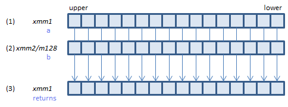
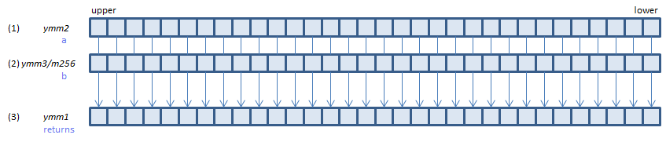

PSIGNB - Packed SIGN Byte
PSIGNB xmm1, xmm2/m128 (SS3
__m128i _mm_sign_epi8(__m128i a, __m128i b)

For each BYTE: if (2) < 0 set -(1) to (3); if (2) == 0 set zero to (3); if (2) > 0 set (1) to (3).
VPSIGNB xmm1, xmm2, xmm3/m128 (V1
__m128i _mm_sign_epi8(__m128i a, __m128i b)

For each BYTE: if (2) < 0 set -(1) to (3); if (2) == 0 set zero to (3); if (2) > 0 set (1) to (3).
VPSIGNB ymm1, ymm2, ymm3/m256 (V2
__m256i _mm256_sign_epi8(__m256i a, __m256i b)

For each BYTE: if (2) < 0 set -(1) to (3); if (2) == 0 set zero to (3); if (2) > 0 set (1) to (3).
512-bit → N/A
x86/x64 SIMD Instruction List
Feedback